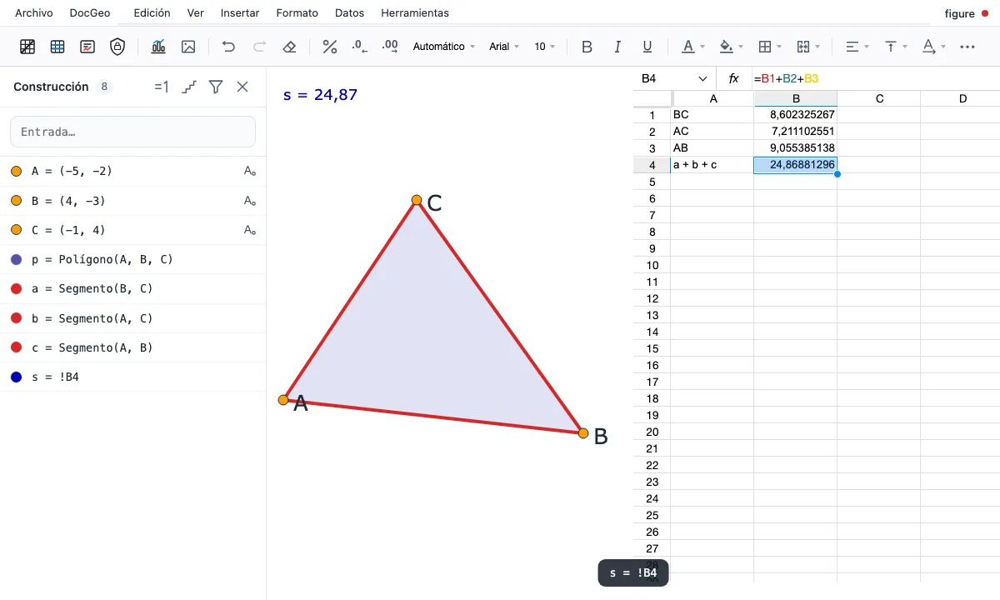

La hoja de cálculo
Una pestaña de DocGeo puede contener una hoja de DocCells, la hoja de cálculo de DocTools: junto a la figura, o sola en su propia pestaña. La figura y las celdas se leen mutuamente, en directo.

En el ejemplo de arriba, el conjunto de Mandelbrot:
-
la columna B calcula la órbita de 0 por z ↦ z² + C, siendo C
el punto verde de la figura: B1 contiene
[0; 0], B2=GEO("C")y B3=B2^2+GEO("C"), copiada hacia abajo hasta B5000. Una lista de dos números se calcula como un punto de la figura, es decir, como un número complejo; -
la columna C solo conserva los términos cuyo rango, en la
columna A, está entre los deslizadores Ln y
Un, leídos por
GEO("L_n")yGEO("U_n"); -
la figura vuelve a leer estos términos con
c = !C1:C5000y los dibuja, unidos por segmentos, cond = Lista(c).
Al arrastrar C, los 5000 términos se recalculan y la línea sigue durante el movimiento: permanece acotada mientras C está dentro del conjunto, y se escapa cuando se saca C de él.
Añadir una hoja de cálculo
| Acción | Cómo |
|---|---|
| Junto a la figura | Archivo › Vista › Nueva vista de hoja de cálculo: una columna más, a la derecha, con una hoja vacía; las columnas toman el mismo ancho (varias vistas) |
| En su propia pestaña | Archivo › Nueva pestaña de hoja de cálculo: una pestaña «Hoja1», «Hoja2»…, que solo contiene una hoja (libros) |
| Redimensionar, mover | arrastrar la separación de las columnas; Archivo › Vista › Mover la vista a la izquierda o a la derecha, cuando la vista de hoja de cálculo está activa |
| Eliminar | Archivo › Vista › Eliminar la vista de hoja de cálculo: la vista y sus celdas desaparecen, la figura recupera el espacio. Una pestaña de hoja de cálculo se elimina como cualquier pestaña. |
- Una pestaña tiene como máximo una vista de hoja de cálculo: Nueva vista de hoja de cálculo aparece en gris cuando ya tiene una.
- Una vista de hoja de cálculo muestra una sola hoja, sin pestañas de hojas. Para trabajar con varias hojas, se crean varias pestañas de hoja de cálculo, que se leen entre sí (ver más abajo).
- Añadir o eliminar una vista de hoja de cálculo se puede deshacer, como las demás acciones sobre las vistas.
Los menús y botones de la hoja de cálculo
Un clic o una pulsación de tecla en las celdas activa la vista de hoja de cálculo. Las barras de DocGeo dejan entonces su sitio a las de la hoja de cálculo, a la misma altura: nada se mueve debajo.
- La barra de menús conserva Archivo, seguido del menú DocGeo y luego de los menús de la hoja de cálculo.
- La barra de botones de la hoja de cálculo (formato de números, fuente, negrita, colores, bordes, alineación…) sustituye a la barra de acciones de DocGeo.
- El menú DocGeo ofrece lo que sigue siendo útil: Historial de la construcción, Paleta de herramientas, Propiedades y el Manual de uso.
- Se vuelve a las barras de DocGeo con un clic en la figura o en el panel «Construcción», escribiendo allí una línea, o cambiando de pestaña. En una pestaña de hoja de cálculo, las barras de la hoja de cálculo permanecen.
- Un cuadro de diálogo de la hoja de cálculo (formato condicional, formato de números…) vela toda la ventana de DocGeo hasta que se cierra.
El panel «Construcción» sigue disponible en una pestaña de hoja de cálculo (DocGeo › Historial de la construcción): un objeto escrito allí se calcula sin dibujarse, y las celdas de esa pestaña pueden leerlo.
Cuando DocGeo está integrado en otra página, como DocTools, no tiene barra de menús: la hoja de cálculo conserva sus barras en la parte superior de su columna.
La figura lee las celdas
Una fórmula de la figura designa una celda de la vista de hoja de
cálculo de la pestaña por un signo de exclamación seguido de la
dirección de la celda: !B3.
| Escritura | Valor |
|---|---|
!B3 |
la celda B3 |
!B2:B21 |
un rango de una fila o una columna: una lista de valores |
!A1:C3 |
un rectángulo: una lista de filas, cada una una lista |
Hoja1!B3 |
la celda B3 de una pestaña de hoja de cálculo |
'Figura 1'!!B3 |
la celda B3 de la vista de hoja de cálculo de otra pestaña |
A = (!B1, !B2)
r = !B3
L = !A1:A10-
La dirección se escribe con letras mayúsculas y luego cifras
(
B3,AA12), sin$, justo después del signo de exclamación. La negación de un objeto llamado A1 se escribe!(A1). -
Un número, un texto, un booleano o una lista se lee tal cual;
una fecha se lee como un número. Una celda contiene una
lista escrita entre corchetes,
[2; 1], o calculada:=[2; 1]*3. Una celda vacía o con error (#DIV/0!…) da un valor indefinido: el objeto que la lee no se dibuja. - En cuanto cambia una celda, por una entrada o por el cálculo de la hoja, los objetos que la leen se recalculan y se redibujan.
- Una referencia es solo parte de una fórmula: no crea ningún objeto. Un punto leído en las celdas, como A arriba, es calculado: no se arrastra con el ratón. Para moverlo, se cambian las celdas.
Las celdas de otra pestaña
Primero va el nombre de la pestaña, entre apóstrofos si contiene
un espacio o un signo, como para
leer otra pestaña:
Hoja1!B3. Si esa pestaña tiene también una figura, se
duplica el signo de exclamación, 'Figura 1'!!B3,
porque 'Figura 1'!B3 designa el objeto B3 de su
figura. Sus celdas se leen tal como estaban calculadas al salir
de esa pestaña.
Las celdas leen la figura: GEO
En una celda, la función GEO lee el valor de un
objeto de la figura, designado por su nombre entre comillas.
=GEO("c")
=GEO("'Figura 1'!c")
=2*GEO("r")+1- El valor es el que leería una fórmula de la figura al nombrar el objeto: longitud de un segmento, valor de una expresión o de un deslizador, texto, estado de una casilla… Sigue a la figura mientras se manipula.
-
Un punto se lee como la lista de sus coordenadas:
=GEO("A")da[1; 2], con la que se calcula como con una lista:=GEO("A")*2. -
Un objeto desconocido, indefinido, o que no es ni número, ni texto, ni booleano, ni punto, ni lista da
#N/A. El nombre debe estar escrito en la fórmula:=GEO(A1)da#VALUE!. -
GEO("'Figura 1'!c")lee el objeto c de otra pestaña: así lee una figura una pestaña de hoja de cálculo. -
GEOtiene el mismo nombre en todos los idiomas. Solo existe en DocGeo: en DocCells solo, da#N/A.
Referencia circular
Un objeto leído por GEO no puede depender de una
celda que depende de él. Si A1 contiene
=GEO("m")+1, redefinir m con la línea
m = !A1 se rechaza: «Referencia circular:
!A1».
Del mismo modo, una fórmula de celda que cerraría un ciclo con la figura se anula con este mensaje, y las celdas recuperan su contenido anterior. En un archivo que aun así contiene un ciclo, la lectura que lo cierra es indefinida.
Deshacer y guardar
- Las celdas tienen su propio deshacer: Ctrl Z en las celdas, o los menús de la hoja de cálculo. Los botones de DocGeo no deshacen lo escrito en la hoja de cálculo.
-
Las celdas, sus fórmulas y su formato se guardan con la
figura, en el mismo archivo
.dgo. Ctrl S en las celdas, o Archivo › Guardar, lo guarda todo.
Para los alumnos
El lector de DocGeo, como una figura insertada en una página web, muestra la hoja sin sus menús ni sus botones, con su barra de fórmulas.
- El alumno puede escribir en las celdas, como en un campo de entrada: la figura sigue.
- El botón de reinicio devuelve las celdas tal como se guardaron.
- Estas entradas no forman parte de la respuesta del alumno que guarda una página que integra la figura: solo los objetos de la figura.
La hoja de cálculo es una aplicación aparte, que solo se carga
si la pestaña mostrada tiene una. En un sitio que aloja su
propia copia de DocGeo, la carpeta doccells debe
publicarse junto a la de DocGeo; si no, la vista de hoja de
cálculo muestra «⚠ DocCells», y el resto de la figura funciona.